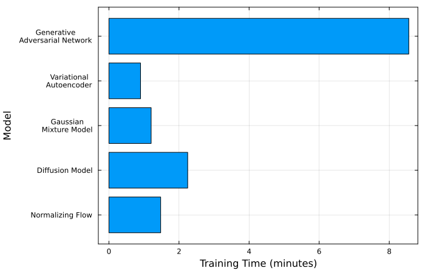
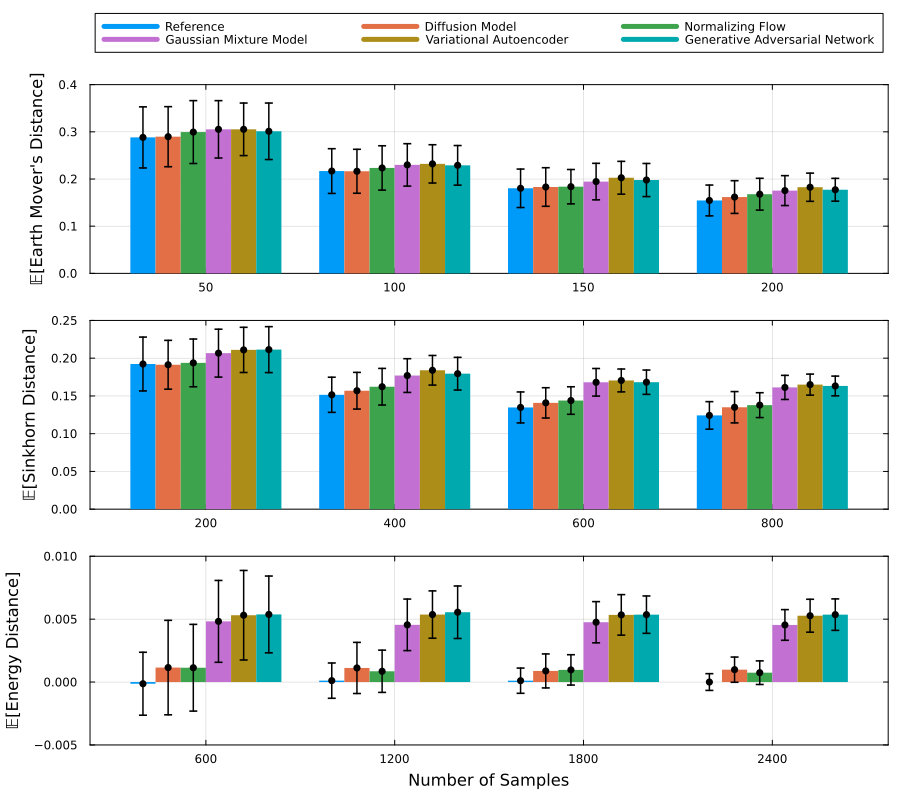

Comparing Models
In this example we explore the use of the three different distribution distances bundled as extensions of this module. The first step to use this extensions is to load this module and the extension's dependencies
using GenerativeModelProtocols
using Distances, OptimalTransport, TulipThe three available distribution distances available as extensions of this module are:
GenerativeModelProtocols.earth_mover_distanceGenerativeModelProtocols.sinkhorn_distanceGenerativeModelProtocols.energy_distance
for details regarding the theory, how they are calculated, and the convergence rate of these distribution distances please visit their respective pages in the Distribution Distances section of this documentation.
Training and Saving the Models
In this example we will use the same data distribution used in the Getting Started examples. More concretely
function make_data(num_samples)
t = (2.0*π) .* rand(Float64,num_samples)
x_noise = 0.05 .* randn(Float64,num_samples)
y_noise = 0.05 .* randn(Float64,num_samples)
x = cos.(1.0.*t) .+ x_noise
y = sin.(2.0.*t) .+ y_noise
return x, y
end
num_samples = 5000
x_train, y_train = make_data(num_samples)
train_data = collect(transpose(hcat(x_train,y_train)))thus, we can, for example, train and save a Diffusion Model (DM) with
using Reactant
using FileIO, HDF5
model = GenerativeModelProtocols.DiffusionModel(2, 250)
protocol = GenerativeModelProtocol(model, train_data)
train_log = train!(protocol;
batchsize = 256,
epochs = 3500,
optimiser = Adam(; eta = 1.0E-3, beta = (0.95,0.999)),
device = reactant_device()
)
save("trained_models/dm_model.h5", protocol)and similarly for any of the other generative models available within this module (check train_modes.jl in the examples folder of this example).
Training Walltime Comparisons
Although these metrics may be of limited interest to end users, training time and the training trace can be accessed through the following fields:
train_elapsed = train_log.elapsed
train_trace = train_log.traceFor the models considered in this example, the Generative Adversarial Network (GAN) takes considerably longer to train than the other models. This is expected, given the use of a gradient penalty to constrain the Lipschitz constant. The Diffusion Model (DM) takes approximately twice as long to train as the Gaussian Mixture Model (GMM) and the Normalizing Flow (NF). The Variational Autoencoder (VAE) has the shortest training time, although its advantage over the GMM and NF is relatively small.
All models were trained for 3500 epochs using reactant_device() as the target device and Reactant.jl's default CPU backend. The experiments were conducted on a system equipped with an Intel Core Ultra 7 255H (16 logical processors), running Ubuntu 26.04.1 and Julia 1.13.2.

Distribution Distances
To compare how accurate is the learned distribution of the models we can use distribution distances. These distances provide us with metrics we can use to establish which of our trained models is more accurate.
To test, for example, the energy distance we begin by making some target test data (the training data or a different dataset can be used)
make_test_data(n) = collect(transpose(hcat(make_data(n)...)))
test_data = make_test_data(50)we can then estimate the energy, sinkhorn and earth mover's distances with
julia> [GenerativeModelProtocols.energy_distance(protocol, test_data) for _ in 1:3]
3-element Vector{Float64}:
0.01595552150364532
0.028605759171251632
0.050649833948142264
julia> [GenerativeModelProtocols.sinkhorn_distance(protocol, test_data) for _ in 1:3]
3-element Vector{Float64}:
0.3617521061608876
0.4137834354567416
0.23351136512088239
julia> [GenerativeModelProtocols.earth_mover_distance(protocol, test_data) for _ in 1:3]
3-element Vector{Float64}:
0.2196202701858471
0.32449728065684535
0.239423579252696likewise, we can establish baseline results using the exact data distribution with
julia> [GenerativeModelProtocols.energy_distance(make_test_data(50), test_data) for _ in 1:3]
3-element Vector{Float64}:
-0.00943460948406516
0.04467508539746823
-0.007815869732488157
julia> [GenerativeModelProtocols.sinkhorn_distance(make_test_data(50), test_data) for _ in 1:3]
3-element Vector{Float64}:
0.2546012264016766
0.3879326669032912
0.3027651251029292
julia> [GenerativeModelProtocols.earth_mover_distance(make_test_data(50), test_data) for _ in 1:3]
3-element Vector{Float64}:
0.3332713794784428
0.3056585730619645
0.33646876306676465thus, repeating this experiment with larger sample sizes we can estimate more accurately the distribution distances.

In the plots above, each distribution distance was estimated over 200 trials for each sample size shown on the x-axis. The histogram heights represent the mean distance across these trials, while the error bars indicate the standard deviation.
Across all three distribution distances, the results indicate that the Diffusion Model (DM) and Normalizing Flow (NF) achieve the highest accuracy, followed by the Gaussian Mixture Models (GMMs), with the Variational Autoencoders (VAEs) and Generative Adversarial Networks (GANs) performing least accurately. Among the three metrics, the energy distance provides the clearest comparison of model performance, primarily because it allows for larger sample sizes.
The sample sizes used for each distribution distance differ because of their respective computational costs.
Inference Walltime Comparisons
The final relevant comparison between models is their inference time. That is, how long do they take at making new synthetic data. For example, we can test how long it takes of a protocol to produce 50 new synthetic data points with
t0 = time()
protocol(50)
t1 = time()In our supplied Julia script for this example, namely examples/compare_models/plot_comparisons.jl, we measure the inference time for three difference batch sample sizes 200 times and report their mean and standard deviation values.
| Model | 100 samples | 200 samples |
|---|---|---|
| Diffusion Model | 5.11e+01 ± 1.28e+01 | 9.69e+01 ± 2.11e+01 |
| Normalizing Flow | 1.75e+00 ± 1.17e+00 | 3.61e+00 ± 5.98e+00 |
| Gaussian Mixture Model | 2.45e-02 ± 1.76e-03 | 3.30e-02 ± 1.19e-03 |
| Variational Autoencoder | 3.13e-02 ± 3.50e-03 | 5.69e-02 ± 1.23e-03 |
| Generative Adversarial Network | 3.01e-02 ± 2.13e-03 | 5.63e-02 ± 1.64e-03 |
Inference time in milliseconds; values are mean ± standard deviation.
For this experiment we can observe that the VAE, GAN and GMM models perform equaly as fast when it comes to inference speed. The NF while performing substantially faster at inference compared to the DM, it is considerably slower than the GMM, VAE and GAN. Finally, the DM is unsurprisingly the slowest at inference since it requires 250 denoising steps for every sample at inference.
Source Code
The scripts used to create and train the models, and to produce all the plots shown in this page are included in the examples folder of this module.
cd /path/to/GenerativeModelProtocols.jl/examples/compare_models
julia train_models.jl
julia compare_models.jl
julia plot_comparisons.jl